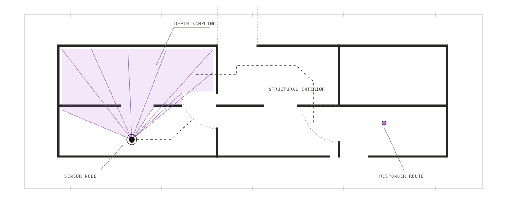

Sensor hardware & edge software
Sensing for
critical environments.
We design sensor arrays and onboard computing systems for structural firefighting, rescue operations, and hazardous spaces.
Our systems
The operating environment
Smoke changes what
a responder can see.
Spatial, thermal, and biometric information each describe a different part of the same operation. Bringing them together helps a team understand the environment and the people inside it.
Our systems01 / Resku
An architecture that connects the space, the conditions, and the responder.
- Spatial
- LiDAR mapping of structural interiors
- Thermal
- Another view of the environment
- Human
- Responder and exposure telemetry
Engineering at banû
Processing belongs
close to the sensor.
Our work spans custom hardware, sensor fusion, FPGA-accelerated inference, and mesh networking. The architecture is designed for places where cloud and GPS connectivity may be unavailable.
Inside the architecture